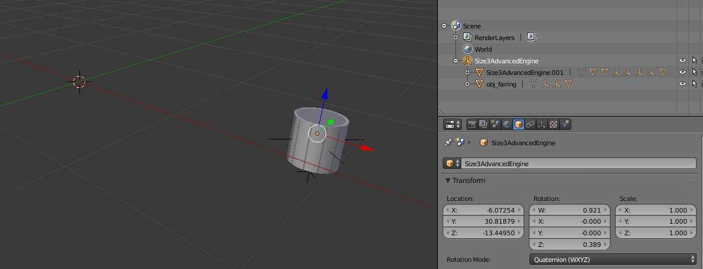
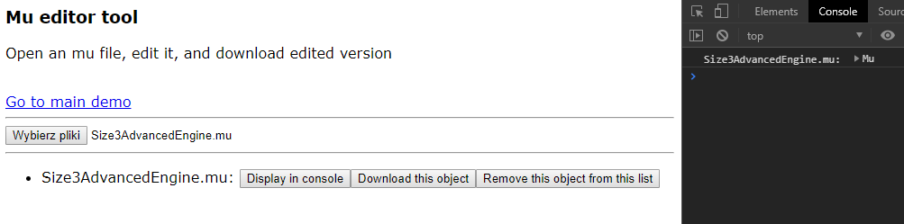
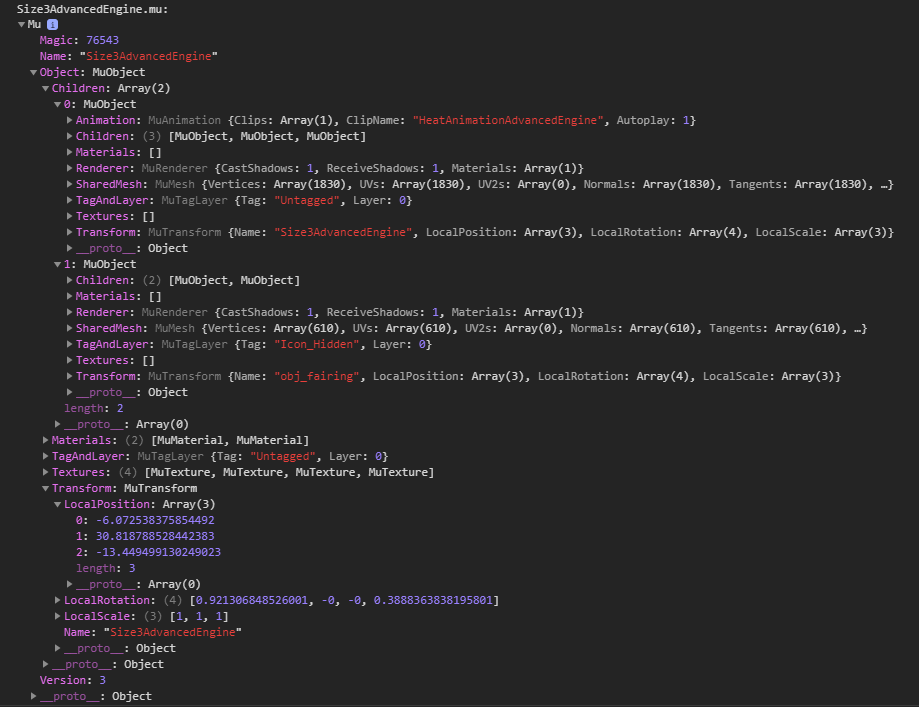
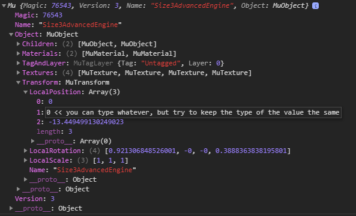
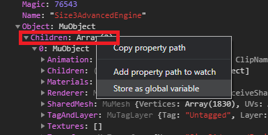
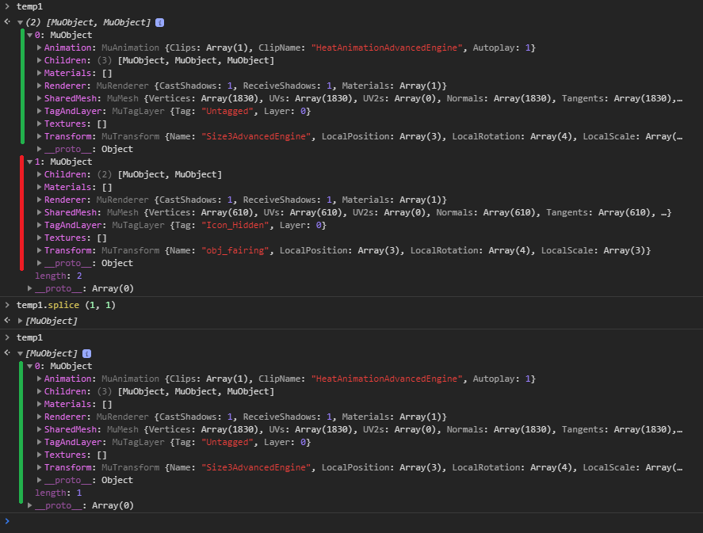
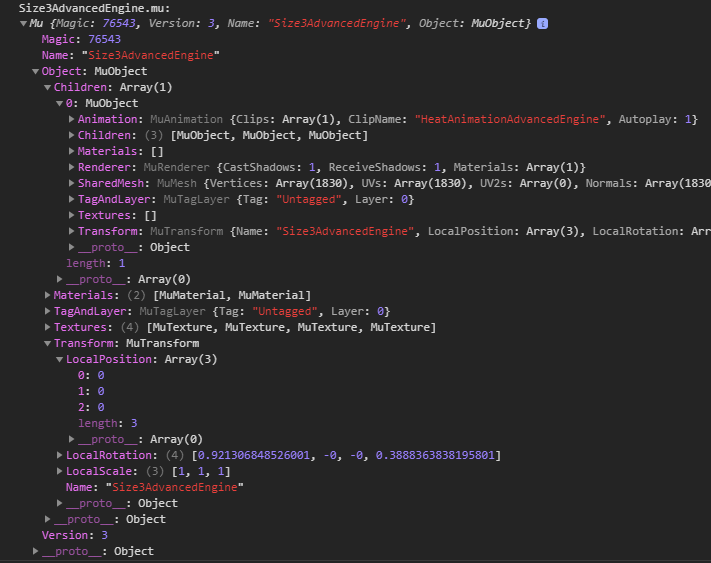
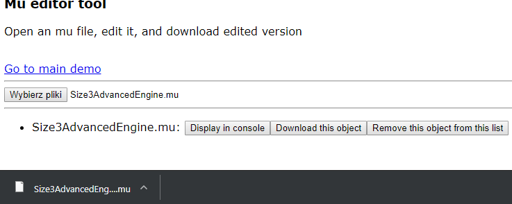
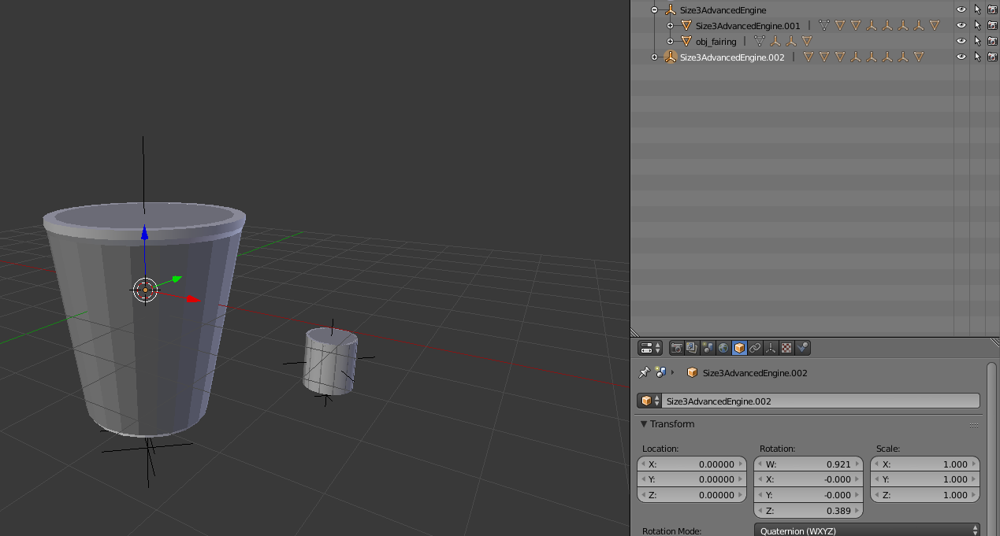

I recommend a chromium based browser, because there you can edit JS objects directly in devtools.
While you can edit the object in, for example, Firefox, you'd need to access all of the variables directly.
For example, below I can edit 'LocalPosition' directly, while in firefox, I'd need to save the mu object as a global variable,
and then type
temp0.Object.Transform.LocalPosition = [0, 0, 0]
in console. It's inefficient, but usable.
Usage example:
In this tutorial I'll edit this model, to show how to use this tool.
I'll move the model to the center of the scene, and remove the fairing object.

Open the mu file on this website. You can use Drag&Drop, and you can upload multiple files at once, multiple times. Previous files won't be removed.

Press 'Display in console' to output the JS representation of the file to the browser's console in devtools (F12 > 'Console' tab)

Double click a simple value to edit it directly

You can edit more advanced values by storing them as a global variable. All of that is stored by reference, so changes in that variable will be equal to changes in original object


As you can see, the changes made to temp1 applied to the children table.

I edited everything I wanted to edit, so it's time to download the file.
Click the 'Download this object' button to download the mu file, with your changes already applied

This is the downloaded file, opened in blender. Notice how it's centered, and has no fairing.
